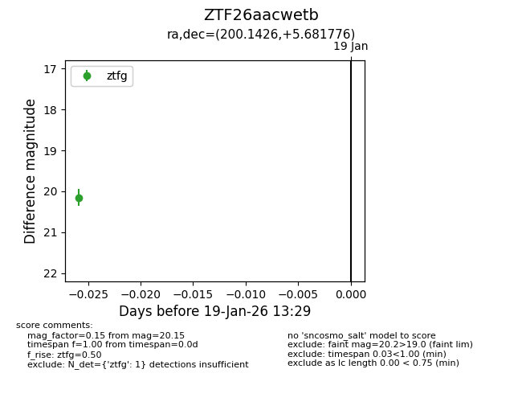
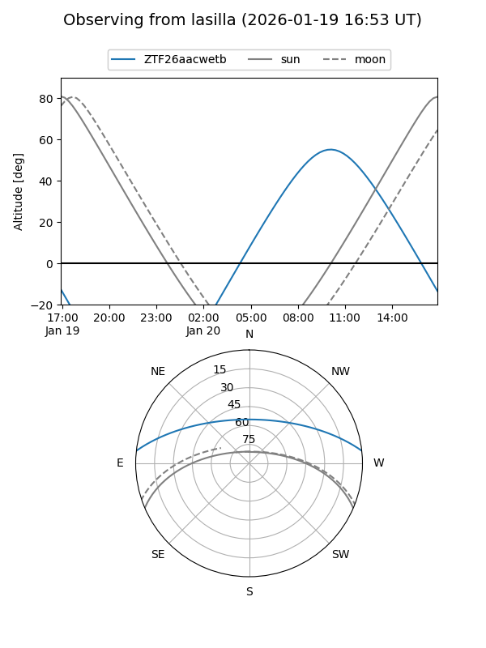
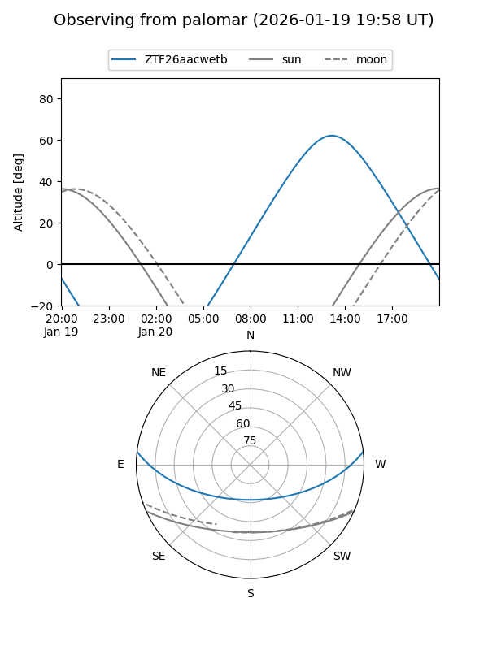

ZTF26aacwetb
Target ZTF26aacwetb at 2026-01-19 13:30
Aliases and brokers:
FINK: link
Lasair: link
ALeRCE: link
alt names
ZTF26aacwetb (ztf,fink_ztf)
Coordinates:
equatorial (ra, dec) = 200.1426,+5.68178
equatorial (HMS+DMS) = 13:20:34.22,+05:40:54.40
galactic (l, b) = (322.1457,+67.46032)
Flags:
Photometry:
last ztfg=20.15
1 ztfg detections
Lightcurve

Visibility


Additional plots